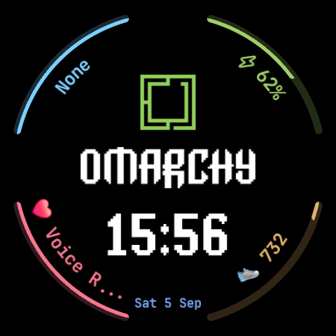

Omarchy Watch Face
Minimalist Retro Pixel-Art Watch Face for Wear OS

Key Highlights
- Pure Watch Face Format (WFF v2): 100% declarative XML with zero executable background code for maximum battery life.
- Authentic Typography: Features the official Omarchy wordmark and matched block pixel font.
- 4 Radial Complications: Battery %, Step Counter, Heart Rate, and Calendar/Weather wrapping seamlessly around the bezel.
- Always-On Display (AOD): Pure black OLED power-saving ambient mode.
- 100% Private: Zero trackers, zero analytics, zero data collection.